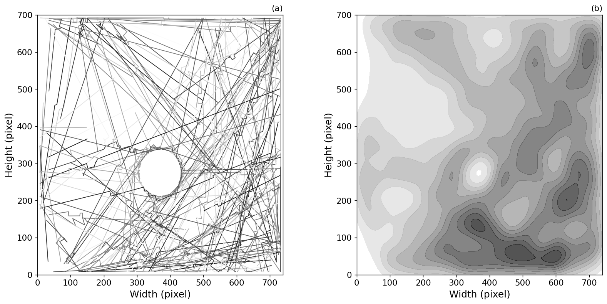

Dealing with Civil Emergencies using Dynamic Agent-Based Models of Cities
Minh Kieu
Lecturer
University of Auckland
These slides:
https://leminhkieu.github.io
Civil emergencies can have devastating impacts
It's extremely difficult to know how to best respond to an emergency
Building a clear picture of the situation
Predict the complex picture of cities
How do we use science to support policy makers?
Big Data of individuals are key

Building a clear picture of the situation: Mobile data
Large population coverage

Private, unknown methodology, privacy concerns, coarse resolution (?)
Building a clear picture of the situation: Google Travel time

Nguyen et al. (2019) A Deep Learning System for Travel Speed Predictions on Multiple Arterial Road Segments. Transportation Research Record: Journal of the Transportation Research Board
Issues in Agent-based modelling: Divergence
The reality is dynamic: Complex models may explain cities, but diverge over time.
The reality is stochastic: No set of parameters would perfectly explain the real system.
There is no systematic mechanism to incorporate new data into agent-based models
Data Assimilation
Improve estimates of the true system state by combining noisy, real-world observations and model estimates

Agent-based model of the Grand Central Station (New York)
